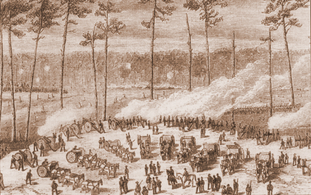
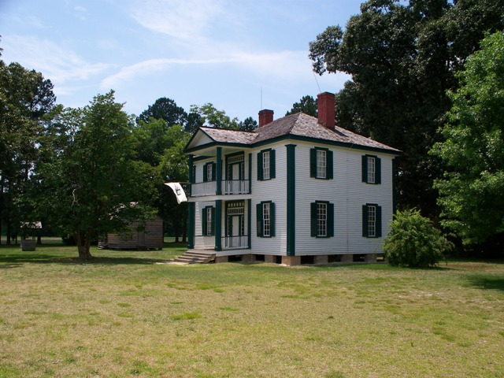

|
The battle of Bentonville, fought from March 19 to March
21, 1865, was the last significant confrontation between two
|

Harper's Weekly published
this engraving of the Battle of Bentonville in
1865.
|
major armies in the Civil War. Confederate forces under
General Joseph E. Johnston attacked Union forces under Major
General William T. Sherman near the small town of
Bentonville, North Carolina, about twenty miles west of
Goldsboro. The Union XIV and XX Corps, commanded by Major
General Henry W. Slocum, were in the advance column, and
Johnston wanted to attack before Sherman and the rest of his
troops could arrive. The Union army was marching northeast
on the Goldsboro Road, while the Confederate army was
positioned on both sides of the road, south of Bentonville.
In the morning on the first day of the battle, March 19,
the Confederates under Lieutenant Generals Alexander P.
Stewart and William J. Hardee and Major Generals Robert F.
Hoke and D. H. Hill broke the Union left wing and drove it
back about a mile south of the Goldsboro Road. The
Confederates then attacked the exposed Union right, but
Brigadier General William Cogswell of the XX Corps
reinforced the beleaguered Union forces under Brigadier
General James D. Morgan's division of the XIV Corps. This
movement upon the Union right is considered the turning
point of the battle, with the Union offensive gaining the
|

This house, still open for tours,
served as a field hospital during the battle.
|
advantage. Succeeding Confederate demonstrations against
the Union left flank failed, and the fighting came to a
stalemate.
On the morning of the second day, March 20, Johnston
strengthened his line north of the Goldsboro Road to protect
Mill Creek Bridge, the only escape route for the Confederate
army. After the arrival of Sherman and the rest of the
Union army, the blue troops outnumbered the gray by about
60,000 to 21,000. Sherman deployed the newly arrived troops
on hid right flank, though the only activity that day was
some heavy skirmishing.
On the third day, March 21, Union Major General Joseph A.
Mower initiated an attack on the Confederate left. While
Hardee's troops managed to stall this offensive, Johnston
and his army nonetheless withdrew on the night of the 21st,
across Mill Creek Bridge and toward Smithfield. Sherman's
forces pursued Johnston on the 22nd, with little effect.
Source: Joan Waugh, ed., Facts on File Encyclopedia of American
History: Civil War and Reconstruction, 1856 to 1869 (New York: Facts on
File, 2003), 28.
|